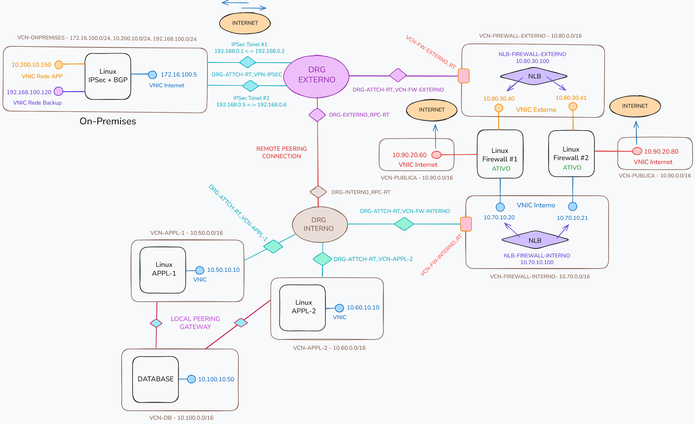

OCI Network Basics
Oracle Cloud Infrastructure Networking
Um portal técnico e visual para estudar os principais fundamentos de redes no Oracle Cloud Infrastructure. Explore conceitos de VCN, sub-redes, roteamento, gateways, DRG, peering, DNS, firewall, BGP e Terraform em uma jornada organizada, prática e orientada à arquitetura cloud.
🎯 Objetivo
Apresentar de forma prática como funciona a arquitetura de rede do Oracle Cloud Infrastructure, desde os conceitos fundamentais até cenários de roteamento avançado.
👥 Público-alvo
DBAs, Cloud Engineers, DevOps, SREs, Arquitetos de Soluções, Administradores de Infraestrutura e estudantes de OCI.
📚 O que você aprenderá
- VCN e Subnets
- Gateways
- DRG e Peering
- DNS
- Firewall
- Policy Routing
- BGP
- Terraform
🚀 Competências
Ao concluir este guia você compreenderá como projetar, implementar e solucionar problemas em ambientes de rede Oracle Cloud Infrastructure.

Objetivo do Guia
Este material apresenta os principais conceitos de rede no Oracle Cloud Infrastructure usando uma topologia de referência para estudo. O foco é explicar os componentes, o funcionamento do roteamento, conectividade entre redes, DNS, firewall, BGP, QoS e exemplos de criação do ambiente com Terraform.
Escolha um capítulo para estudar
Use os cards abaixo como navegação principal do guia.
Visão Geral dos Componentes de Rede do OCI
Ler capítulo →
02Componentes da Topologia de Referência
Ler capítulo →
03VCN e Roteamento de Sub-rede
Ler capítulo →
04Nota sobre VNICs
Ler capítulo →
05Firewall e Conntrack Table
Ler capítulo →
06Funcionamento do Roteamento no DRG
Ler capítulo →
07Roteamento via Firewall Central
Ler capítulo →
08Hub & Spoke com Local Peering Gateway
Ler capítulo →
09Network Visualizer
Ler capítulo →
10Policy Routing
Ler capítulo →
11DNS
Ler capítulo →
12Roteamento Dinâmico
Ler capítulo →
13ToS e QoS
Ler capítulo →
Terraform Quick Setup
Passo a passo resumido para criar no OCI, via Terraform, os componentes de rede usados na topologia de estudo.
Pré-requisitos
git clone git@github.com:daniel-armbrust/oci-network-basics.git
cd oci-network-basicswget https://releases.hashicorp.com/terraform/1.14.4/terraform_1.14.4_linux_amd64.zip
unzip terraform_1.14.4_linux_amd64.zip
sudo mv terraform /usr/local/bin/
terraform -versioncd terraform/
cp terraform.tfvars-example terraform.tfvars
vi terraform.tfvarsapi_private_key_path = ""
api_fingerprint = ""
tenancy_id = ""
user_id = ""
root_compartment = ""terraform init
terraform plan
terraform apply
terraform destroyVisão Geral dos Componentes de Rede do OCI
Visão Geral dos Componentes de Rede do OCI
Componentes Básicos
Gateways de Comunicação
Conectividade (nuvem híbrida)
Componentes da Topologia de Referência
Componentes de Rede da Topologia de Referência
```vcn-appl-1```
### ``subnprv-1``
### ``rt_subnprv-1``
### ``secl-1_subnprv-1``
### ``dhcp-options``
### ``lpg_vcn-appl-1_vcn-db``
```vcn-appl-2```
### ``subnprv-1``
### ``rt_subnprv-1``
### ``secl-1_subnprv-1``
### ``dhcp-options``
### ``lpg_vcn-appl-2_vcn-db``
```vcn-db```
### ``subnprv-1``
### ``rt_subnprv-1``
### ``secl-1_subnprv-1``
### ``dhcp-options``
### ``lpg_vcn-db_vcn-appl-1``
### ``lpg_vcn-db_vcn-appl-2``
```vcn-publica```
### ``subnpub-1``
### ``rt_subnpub-1``
### ``secl-1_subnpub-1``
### ``dhcp-options``
```vcn-fw-interno```
### ``subnprv-1``
```vcn-fw-externo```
### ``subnprv-1``
```vcn-onpremises```
### ``subnpub-internet``
### ``subnprv-rede-app``
### ``subnprv-rede-backup``
```drg-externo```
```drg-interno```
```onpremises_ipsec```
### ``cpe_vm-ipsec_onpremises``
### ``tunnel-1` e `tunnel-2``
```nlb_fw-interno```
```nlb_fw-externo```
```firewall-1``` e ```firewall-2```
### ``vnic-appl``
### ``vnic-externo``
### ``vnic-internet``
VCN e Roteamento de Sub-rede
VCN e Roteamento de Sub-rede
VCN (Virtual Cloud Network)
Uma das primeiras atividades ao iniciar os trabalhos com o OCI é configurar corretamente uma VCN (Virtual Cloud Network) e seus componentes de rede. Pode-se afirmar que uma VCN é uma rede maior que pode ser subdividida em partes menores, chamadas de sub-redes (subnets).
Cada sub-rede consiste em uma faixa contínua de endereços IP únicos (conforme RFC1918) que existem dentro da mesma VCN. É nas sub-redes que se pode criar instâncias computacionais e outros recursos que dependem de uma rede IP para funcionar.
A sub-rede atua como uma unidade de configuração para os recursos criados dentro dela, mais especificamente para as VNICs que ali forem criadas. Isso significa que todas as VNICs e outros recursos em nuvem criados na mesma sub-rede compartilham a mesma Route Table, Security Lists e DHCP Options.
Um aspecto relevante ao criar uma nova VCN, no que diz respeito ao roteamento, é que ela vem automaticamente com uma route table padrão (``Default Route Table for <NOME-DA-VCN>``). Todas as sub-redes criadas dentro dessa VCN, a menos que especificado de outra forma, utilizarão essa mesma route table. Isso pode dificultar a configuração do roteamento quando as sub-redes dessa VCN exigem configurações de roteamento de forma independente.
Por exemplo, em uma VCN que contém duas sub-redes, uma pública e outra privada, é esperado que cada sub-rede tenha sua própria tabela de roteamento. A sub-rede pública precisa de uma rota padrão que direcione o tráfego para o Internet Gateway (IGW), permitindo que os recursos criados recebam e enviem tráfego da Internet. Por outro lado, na sub-rede privada, a rota padrão costuma direcionar o tráfego para um NAT Gateway (NGW) ou para o DRG (Dynamic Routing Gateway).

A boa prática que fica é:
O resultado final, por exemplo, para cada VCN, será similar ao diagrama abaixo:

Comandos de Exemplo
VCN
$ oci network vcn create \
> --compartment-id "ocid1.compartment.oc1..aaaaaaaan" \
> --cidr-block "10.100.0.0/16" \
> --display-name "vcn-a" \
> --dns-label "vcna"
Gateways de Comunicação
Internet Gateway (IGW)
$ oci network internet-gateway create \
> --compartment-id "ocid1.compartment.oc1..aaaaaaaa" \
> --vcn-id "ocid1.vcn.oc1.sa-saopaulo-1.amaaaaaa" \
> --display-name "igw" \
> --is-enabled "true"
NAT Gateway (NGW)
$ oci network nat-gateway create \
> --compartment-id "ocid1.compartment.oc1..aaaaaaaa" \
> --vcn-id "ocid1.vcn.oc1.sa-saopaulo-1.amaaaaaa" \
> --display-name "ngw" \
> --block-traffic "false"
Service Gateway (SGW)
$ oci network service list
{
"data": [
{
"cidr-block": "all-gru-services-in-oracle-services-network",
"description": "All GRU Services In Oracle Services Network",
"id": "ocid1.service.oc1.sa-saopaulo-1.aaaaaaaa",
"name": "All GRU Services In Oracle Services Network"
},
{
"cidr-block": "oci-gru-objectstorage",
"description": "OCI GRU Object Storage",
"id": "ocid1.service.oc1.sa-saopaulo-1.aaaaaaaa",
"name": "OCI GRU Object Storage"
}
]
}
$ oci network service-gateway create \
> --compartment-id "ocid1.compartment.oc1..aaaaaaaa" \
> --vcn-id "ocid1.vcn.oc1.sa-saopaulo-1.amaaaaaa" \
> --display-name "sgw" \
> --services '[{"serviceId": "ocid1.service.oc1.sa-saopaulo-1.aaaaaaaa"}]'
Route Tables
Route Table da sub-rede pública (rt_subnpub)
$ oci network route-table create \
> --compartment-id "ocid1.compartment.oc1..aaaaaaaa" \
> --vcn-id "ocid1.vcn.oc1.sa-saopaulo-1.amaaaaaa" \
> --display-name "rt_subnpub" \
> --route-rules '[{
> "destination": "0.0.0.0/0",
> "destinationType": "CIDR_BLOCK",
> "networkEntityId": "ocid1.internetgateway.oc1.sa-saopaulo-1.aaaaaaaa"
> }]'
Route Table da sub-rede privada (rt_subnprv)
$ oci network route-table create \
> --compartment-id "ocid1.compartment.oc1..aaaaaaaa" \
> --vcn-id "ocid1.vcn.oc1.sa-saopaulo-1.amaaaaaa" \
> --display-name "rt_subnprv" \
> --route-rules '[{
> "destination": "0.0.0.0/0",
> "destinationType": "CIDR_BLOCK",
> "networkEntityId": "ocid1.natgateway.oc1.sa-saopaulo-1.aaaaaaaa"
> },{
> "destination": "all-gru-services-in-oracle-services-network", \
> "destinationType": "SERVICE_CIDR_BLOCK",
> "networkEntityId": "ocid1.servicegateway.oc1.sa-saopaulo-1.aaaaaaaa"
> }]'
Security Lists
Security List da sub-rede pública (secl-1_subnpub)
$ oci network security-list create \
> --compartment-id "ocid1.compartment.oc1..aaaaaaaa" \
> --vcn-id "ocid1.vcn.oc1.sa-saopaulo-1.amaaaaaa" \
> --display-name "secl-1_subnpub" \
> --ingress-security-rules '[{
> "source": "0.0.0.0/0",
> "sourceType": "CIDR_BLOCK",
> "protocol": "6",
> "isStateless": false,
> "tcpOptions": {
> "destinationPortRange": {
> "min": 443,"max": 443
> }
> }
> }]' \
> --egress-security-rules '[{
> "destination": "0.0.0.0/0",
> "destinationType": "CIDR_BLOCK",
> "protocol": "all",
> "isStateless": false
}]'
Security List da sub-rede privada (secl-1_subnprv)
$ oci network security-list create \
> --compartment-id "ocid1.compartment.oc1..aaaaaaaa" \
> --vcn-id "ocid1.vcn.oc1.sa-saopaulo-1.amaaaaaa" \
> --display-name "secl-1_subnprv" \
> --ingress-security-rules '[{
> "source": "0.0.0.0/0",
> "sourceType": "CIDR_BLOCK",
> "protocol": "all",
> "isStateless": false
> }]' \
> --egress-security-rules '[{
> "destination": "0.0.0.0/0",
> "destinationType": "CIDR_BLOCK",
> "protocol": "all",
> "isStateless": false
}]'
DHCP Options
$ oci network dhcp-options create \
> --compartment-id "ocid1.compartment.oc1..aaaaaaaa" \
> --vcn-id "ocid1.vcn.oc1.sa-saopaulo-1.amaaaaaa" \
> --display-name "dhcp_options" \
> --options '[{
> "type": "DomainNameServer", "serverType": "VcnLocalPlusInternet"
> }]'
Sub-redes
Sub-rede pública (subnpub)
$ oci network subnet create \
> --compartment-id "ocid1.compartment.oc1..aaaaaaaa" \
> --vcn-id "ocid1.vcn.oc1.sa-saopaulo-1.amaaaaaa" \
> --cidr-block "10.100.30.0/24" \
> --display-name "subnpub" \
> --dns-label "subnpub" \
> --route-table-id "ocid1.routetable.oc1.sa-saopaulo-1.aaaaaaaa" \
> --security-list-ids '["ocid1.securitylist.oc1.sa-saopaulo-1.aaaaaaaa"]' \
> --dhcp-options-id "ocid1.dhcpoptions.oc1.sa-saopaulo-1.aaaaaaaa" \
> --prohibit-public-ip-on-vnic "false"
Sub-rede privada (subnprv)
$ oci network subnet create \
> --compartment-id "ocid1.compartment.oc1..aaaaaaaa" \
> --vcn-id "ocid1.vcn.oc1.sa-saopaulo-1.amaaaaaa" \
> --cidr-block "10.100.20.0/24" \
> --display-name "subnprv" \
> --dns-label "subnprv" \
> --route-table-id "ocid1.routetable.oc1.sa-saopaulo-1.aaaaaaaa" \
> --security-list-ids '["ocid1.securitylist.oc1.sa-saopaulo-1.aaaaaaaa"]' \
> --dhcp-options-id "ocid1.dhcpoptions.oc1.sa-saopaulo-1.aaaaaaaa" \
> --prohibit-public-ip-on-vnic "true"
Roteamento de Sub-rede
Roteamento de sub-rede refere-se à decisão de roteamento aplicada no momento em que um pacote sai da VNIC de um recurso computacional hospedado em uma determinada sub-rede. Esse tipo de roteamento também é conhecido como _egress routing_ e é controlado pela tabela de rotas associada à sub-rede. Vale lembrar que toda sub-rede criada possui uma tabela de rotas vinculada.
A tabela de rotas da sub-rede funciona em conjunto com o endereço IP do gateway da sub-rede sendo que, uma sub-rede quando criada, reserva o primeiro endereço IP do CIDR escolhido para ser o gateway dessa sub-rede. Por exemplo, se o CIDR da sub-rede for 10.100.20.0/24, o endereço IP do gateway será automaticamente 10.100.20.1.
Manipular a tabela de rotas de uma sub-rede é relativamente simples, pois ela permite apenas a inserção de regras estáticas de forma manual (static routes). Além disso, o next-hop dessas regras pode ser definido de duas formas:
Por exemplo, para adicionar uma regra de roteamento em que o next-hop seja um NAT Gateway, pode-se utilizar o seguinte comando:
$ oci network route-table update \
> --rt-id "ocid1.routetable.oc1.sa-saopaulo-1.aaaaaaaa" \
> --route-rules '[{"cidrBlock": "0.0.0.0/0","networkEntityId": "ocid1.natgateway.oc1.sa-saopaulo-1.aaaaaaaa"}]' \
> --force \
> --wait-for-state "AVAILABLE"
Fluxo de Decisão de Roteamento
O fluxo de roteamento, ou a ordem de avaliação das regras de roteamento para alcançar uma rede diferente, inicia-se sempre no host e, em seguida, passa pela tabela de rotas da sub-rede.
Considere o exemplo a seguir: um compute instance com uma VNIC configurada com o endereço IP 10.100.20.10 deseja acessar a Internet, por exemplo, o endereço 8.8.8.8.

Nota sobre VNICs
Nota sobre VNICs
VNIC (Virtual Network Interface Card), nada mais é do que uma interface de rede lógica associada a uma interface de rede (NIC). Uma VNIC reside em uma sub-rede e é responsável por permitir que uma instância computacional se comunique com a rede. Ou seja, todo recurso computacional que possui conectividade de rede está possui pelo menos uma VNIC.
Algumas notas sobre VNICs, extraídas da documentação oficial "Virtual Network Interface Cards (VNICs)" e complementadas pela minha experiência, que considero importantes, são:
VNICs em Múltiplas Sub-redes
Considere o exemplo a seguir:

O primeiro ponto importante dessa configuração é que, como já mencionado, um compute instance pode possuir múltiplas VNICs, sendo esse tipo de arquitetura bastante comum em cenários em que o compute é um firewall.
Um detalhe importante é que a VNIC é um recurso vinculado a um Availability Domain (AD). Isso significa que todas as VNICs associadas a um compute instance devem estar no mesmo Availability Domain. Não é possível, por exemplo, que uma instância tenha uma VNIC no AD-1 e outra no AD-2.
Outro detalhe - talvez o mais importante - está relacionado ao roteamento entre múltiplas VNICs, considerando que cada uma pode estar associada a uma sub-rede diferente. Como cada VNIC pertence a uma sub-rede distinta, cada sub-rede possui seu próprio gateway (primeiro IP do CIDR) e sua própria tabela de rotas associada.
Do ponto de vista das sub-redes, isso não representa um problema. A atenção deve estar voltada para o host, mais especificamente para a tabela de roteamento do sistema operacional. Esse comportamento não é configurado automaticamente e requer configuração manual.

Firewall e Conntrack Table
Firewall e Conntrack Table
Security List vs. Network Security Group
O serviço de rede do OCI disponibiliza dois tipos de firewalls, nas camadas 3 e 4 do modelo OSI, para controle de tráfego de entrada (ingress) e saída (egress). O funcionamento de ambos é idêntico: todo tráfego é bloqueado por padrão até que encontre uma regra que permita sua passagem (ALLOW). São eles:
Security List
Esse é o firewall associado à sub-rede e aplicado a todas as suas VNICs. Como resultado, todo o tráfego de entrada (ingress) e saída (egress) é inspecionado com base nas regras definidas na Security List.

Toda sub-rede deve ter pelo menos uma security list e pode ter no máximo, cinco security lists empilhadas. Nesse caso, todas as Security Lists são avaliadas em conjunto na busca por uma regra que permita o tráfego (ALLOW).
$ oci network security-list update \
> --security-list-id "ocid1.securitylist.oc1.sa-saopaulo-1.aaaaaaaa" \
> --ingress-security-rules '[{
> "protocol": "6",
> "source": "0.0.0.0/0",
> "tcpOptions": {
> "destinationPortRange": {
> "min": 80,
> "max": 80
> }
> }
> }]' \
> --force
Network Security Group (NSG)
Este é o firewall que pode ser associado a uma VNIC ou a um grupo de VNICs. Nesse caso, a inspeção do tráfego é realizada no nível da VNIC, permitindo que cada VNIC possua suas próprias regras exclusivas para controle do tráfego.

$ oci network nsg create \
> --compartment-id "ocid1.compartment.oc1..aaaaaaaa" \
> --vcn-id "ocid1.vcn.oc1.sa-saopaulo-1.aaaaaaaa" \
> --display-name "web-nsg"
$ oci network nsg rules add \
> --nsg-id "ocid1.networksecuritygroup.oc1.sa-saopaulo-1.aaaaaaaa" \
> --security-rules '[{
> "direction": "INGRESS",
> "protocol": "6",
> "source": "0.0.0.0/0",
> "tcpOptions": {
> "destinationPortRange": {
> "min": 80,
> "max": 80
> }
> }
> }]'
$ oci network vnic update \
> --vnic-id ocid1.vnic.oc1.sa-saopaulo-1.aaaaaaaa \
> --nsg-ids '["ocid1.networksecuritygroup.oc1.sa-saopaulo-1.aaaaaaaa"]' \
> --force
Conntrack Table
Toda regra de segurança que for criada, seja uma regra de Security List ou Network Security Group (NSG), pode ser definida como sendo do tipo Stateful ou Stateless. Por padrão, as regras são criadas como Stateful.
Uma regra Stateful utiliza uma funcionalidade chamada Connection Tracking, que mantém informações sobre as conexões permitidas pelas Security Lists ou Network Security Groups (NSG).
Por exemplo, suponha que exista uma regra em uma Security List que permita tráfego de qualquer origem (0.0.0.0/0) com destino à porta 80/TCP. Após esse tráfego ser inspecionado e permitido, a Security List armazena em uma espécie de buffer, mais precisamente, em uma tabela, informações como o IP de origem, porta e protocolo de origem, IP de destino, porta e protocolo de destino (dados do socket da conexão). Essa tabela é chamada de Conntrack Table.
A Conntrack Table, no exemplo mencionado, é consultada quando há tráfego de retorno, ou seja, quando o recurso computacional envia uma resposta. Nesse momento, a Security List utiliza essa tabela para permitir automaticamente o tráfego de volta ao originador. Dessa forma, não é necessário avaliar as regras de egress para a resposta. Diz-se, então, que a Security List mantém o _"estado da conexão"_ através da sua Conntrack Table, ou seja, realiza o Connection Tracking.
Já as regras do tipo Stateless não há Conntrack Table e, portanto, não existe limite ou tabela que mantém o estado das conexões. No entanto, para cada regra de entrada (ingress), é necessário definir também uma regra de saída (egress). Em outras palavras, é preciso configurar regras que permitam tanto o tráfego de entrada quanto o de saída (ida e volta). Do ponto de vista administrativo, configurar regras do tipo Stateless é mais trabalhoso, pois exige a definição de um maior número de regras.
A recomendação geral é: utilize regras do tipo Stateless em sub-redes que hospedam firewalls, load balancers públicos ou qualquer sub-rede que possa ter (ou tenha) alto volume de tráfego.
Compute Instance Firewall
Todo novo compute instance criado a partir de imagens de plataforma, como Oracle Linux ou Windows, já vem com o firewall do sistema operacional ativado por padrão. Nesse caso, apenas as portas administrativas são liberadas: 22/TCP para SSH no Linux e 3389/TCP para Remote Desktop (RDP) no Windows.
# systemctl status firewalld
● firewalld.service - firewalld - dynamic firewall daemon
Loaded: loaded (/usr/lib/systemd/system/firewalld.service; disabled; preset: enabled)
Active: active (running) since Mon 2026-01-23 10:59:46 GMT; 1s ago
Docs: man:firewalld(1)
Process: 7142 ExecStartPost=/usr/bin/firewall-cmd --state (code=exited, status=0/SUCCESS)
Main PID: 7139 (firewalld)
Tasks: 2 (limit: 22760)
Memory: 31.1M (peak: 52.5M)
CPU: 646ms
CGroup: /system.slice/firewalld.service
└─7139 /usr/bin/python3 -s /usr/sbin/firewalld --nofork --nopid
Jan 01 10:59:45 bastion systemd[1]: Starting firewalld - dynamic firewall daemon...
Jan 01 10:59:46 bastion systemd[1]: Started firewalld - dynamic firewall daemon.
A razão disso é permitir que apenas o usuário root em instâncias Linux ou usuários do grupo Administradores em instâncias Windows realizem conexões de saída para os endpoints da rede iSCSI (169.254.0.2:3260 e 169.254.2.0/24:3260).
Recomenda-se não remover esse serviço nem reconfigurar essas regras. Caso contrário, usuários sem privilégios de root ou de administrador poderão obter acesso ao boot volume da instância.
Funcionamento do Roteamento no DRG
Funcionamento do Roteamento no DRG
DRG (Dynamic Routing Gateway)
O DRG (Dynamic Routing Gateway) é um componente responsável por possibilitar a conectividade e realizar o roteamento entre VCNs, seja na mesma região ou entre regiões diferentes. Além disso, ele permite a conectividade privada com ambientes on-premises, por meio do FastConnect ou do serviço de VPN Site-to-Site.
Será utilizado o diagrama abaixo para ilustrar o funcionamento do roteamento no DRG.

Para criar o DRG, utiliza-se o comando a seguir:
$ oci network drg create \
> --compartment-id "ocid1.compartment.oc1..aaaaaaaa" \
> --display-name "DRG"
Em seguida, é necessário conectar as VCNs ao DRG. No contexto do DRG, essa ação de "conectar" é chamada anexar (attach) e pode ser realizada por meio do comando abaixo:
$ oci network drg-attachment create \
> --drg-id "ocid1.drg.oc1.sa-saopaulo-1.aaaaaaaa" \
> --vcn-id "ocid1.vcn.oc1.sa-saopaulo-1.amaaaaaa" \
> --display-name "DRG-ATTCH_VCN-A"
$ oci network drg-attachment create \
> --drg-id "ocid1.drg.oc1.sa-saopaulo-1.aaaaaaaa" \
> --vcn-id "ocid1.vcn.oc1.sa-saopaulo-1.bbbbbbbb" \
> --display-name "DRG-ATTCH_VCN-B"
Não apenas VCNs podem ser anexadas ao DRG, mas também outros recursos de rede. Entre os mais comuns estão o FastConnect (Virtual Circuit attachments), a VPN Site-to-Site (IPSec Tunnel attachments) e o Remote Peering Connection (RPC attachments), que permite a conexão entre dois DRGs, seja na mesma região ou em regiões diferentes.
DRG Route Table e Import Route Distribution
Ao anexar uma VCN ao DRG, o anexo passa automaticamente a utilizar a tabela de rotas padrão denominada Autogenerated DRG Route Table for VCN Attachments. Essa tabela é criada no momento da criação do DRG e, por padrão, é associada a todas as VCNs anexadas a ele.

Já no caso do FastConnect, da VPN Site-to-Site ou do Remote Peering Connection (RPC), ao serem anexados ao DRG, a tabela de rotas padrão utilizada é a Autogenerated Drg Route Table for RPC, VC, and IPSec attachments.
As tabelas de rotas do DRG tem um funcionamento diferente em comparação às tabelas de rotas das sub-redes. A principal diferença é que as regras de roteamento sempre têm como destino um outro anexo. Isso significa que não é possível definir um next-hop que aponte diretamente para um endereço IP, por exemplo.

Outro aspecto importante é que as rotas podem ser inseridas dinamicamente através de um recurso chamado Import Route Distribution. Assim, uma tabela de rotas do DRG pode incluir um Import Route Distribution, que permitirá a instalação dinâmica das redes de outros anexo(s).
Na imagem abaixo, é possível ver que a tabela Autogenerated DRG Route Table for VCN Attachments utiliza o recurso de importação de rotas chamado Autogenerated Import Route Distribution for ALL routes.

Por padrão, o DRG inclui dois Import Route Distribution, que são:
Um Import Route Distribution pode incluir as seguintes declarações:
A ordem de importação das redes é gerenciada pelo parâmetro Priority, onde um número menor indica uma maior prioridade. As prioridades são processadas em ordem crescente, portanto, redes com um número de prioridade menor serão processadas primeiro.
Na imagem abaixo, as redes do anexo DRG-ATTCH_VCN-B serão importadas primeiro para a tabela de rotas, seguidas pelas redes de todos os anexos do tipo Virtual Circuit e logo após, as redes do anexo do tipo Remote Peering Connection.

Além das rotas dinâmicas que podem ser importadas por meio do Import Route Distribution, as tabelas de roteamento do DRG também oferecem a opção de utilizar rotas estáticas. Vale lembrar que o next-hop nas tabelas do DRG deve ser sempre um anexo.

Fluxo de Roteamento no DRG
Após compreender o funcionamento das tabelas de rotas no DRG, avançamos para o próximo estágio, que aborda como as decisões de roteamento são realmente tomadas a partir do momento em que o pacote sai da sub-rede e passa a entrar no DRG.
O processo é simples: a decisão de roteamento ocorre quando o pacote "entra" no DRG. Em outras palavras, a tabela de rotas do DRG é consultada assim que o pacote sai da sub-rede e entra no DRG.
Vamos ao seguinte exemplo. Suponha que o compute instance 10.100.20.5 da VCN-A queira se comunicar com o compute instance 172.16.50.100 da VCN-B. As decisões de roteamento que serão feitas da origem para o destino são:

Roteamento via Firewall Central
Roteamento via Firewall Central (hub & spoke)
Topologia Hub & Spoke
A topologia do tipo Hub & Spoke é muito utilizada em ambientes corporativos, nos quais há, geralmente, a necessidade de um firewall mais sofisticado (VCN Hub), capaz de oferecer maior controle e proteção sobre o tráfego entre aplicações (VCNs Spoke), sejam entre VCNs ou no fluxo de dados entre o ambiente on-premises e o OCI.
De forma simples, a ideia geral é: forçar, de forma transparente, que todo o tráfego entre aplicações passe por um firewall central.
Para ilustrar o funcionamento dessa topologia, será utilizado o diagrama abaixo:

Tabelas de Rotas
Falando das tabelas de roteamento, temos as que seguem:
Fluxo de Roteamento
Suponha que a compute instance VM-A (10.100.20.5) da VCN-A (Spoke) queira se comunicar com a compute instance VM-B (172.16.50.100) da VCN-B (Spoke). As decisões de roteamento da origem para o destino, que fazem o tráfego passar pelo firewall (192.168.100.50) na VCN‑FIREWALL (Hub), são:
O tráfego de retorno, ou seja, a resposta da compute instance VM-B (172.16.50.100) para VM-A (10.100.20.5), segue o mesmo fluxo de decisões de roteamento descrito anteriormente, em sentido inverso.
Comandos de Exemplo
No diretório scripts/roteamento-via-firewall-central há um conjunto de scripts para criar a topologia apresentada através do OCI CLI.
$ ls -1F
create/
data.env
destroy/
O arquivo data.env define variáveis globais usadas pelos scripts. Elas specificam nomes dos recursos, endereços IP, regras de roteamento, IDs das imagens Linux, tipo de shape e quantidades de OCPU e memória para as compute instances.
Antes de executar os scripts, crie e exporte as seguintes variáveis de ambiente:
$ export COMPARTMENT_ID="ocid1.compartment.oc1..aaaaaaaa"
$ export SSH_PUB_KEY_PATH="/caminho/chave-publica-ssh.key"
Para criar os recursos, execute o script create.sh a partir do diretório create/:
$ cd create/
$ ./create.sh
Para excluir os recursos, execute o script destroy.sh a partir do diretório destroy/:
$ cd destroy/
$ ./destroy.sh
Hub & Spoke com Local Peering Gateway
Hub & Spoke com Local Peering Gateway (LPG)
Local Peering Gateway (LPG)
O Local Peering Gateway (LPG) é utilizado para conectar duas VCNs diretamente.
Hoje, já não é mais recomendado utilizar LPGs para conectar VCNs pois, a função que o LPG desempenha foi substituída pelo DRG, que é o modo atualmente recomendado para se construír topologias de redes no OCI.
Eu particularmente, ainda vejo diversas topologias que utilizam LPGs para interconectar VCNs. Por esse motivo, considero importante compreender como o roteamento funciona quando existe um LPG realizando a comunicação entre as VCNs.
DRG vs LPG
Além da forma utilizada para estabelecer a conectividade, as decisões de roteamento realizadas através do DRG diferem das utilizadas em cenários com LPG. Observe o diagrama abaixo:

No caso do DRG, a decisão de roteamento ocorre quando o pacote sai da VCN e entra no DRG. Nesse momento, é consultada a tabela de rotas associada ao anexo responsável pela conexão entre a VCN e o DRG.
Já no cenário com LPG, existem duas tabelas de rotas, uma em cada extremidade da conexão, que podem ou não existir. Nesse modelo, a decisão de roteamento ocorre quando o pacote sai da VCN de origem e entra na VCN de destino.
Sim, com o LPG é possível definir uma tabela de rotas para cada extremidade da conexão. No exemplo, existe uma tabela de rotas aplicada para os pacotes que entram na vcn-a e outra para os pacotes que entram na vcn-b.
Mas vale lembrar que essas tabelas de rotas associadas ao LPG só fazem sentido quando há a necessidade de desviar ou direcionar o tráfego para destinos específicos após a entrada do pacote na VCN de destino. Caso contrário, não é necessário associar nenhuma tabela, pois o próprio LPG já realiza automaticamente a divulgação das redes das VCNs conectadas.
Fluxo de Roteamento
Observe o diagrama abaixo, que ilustra o fluxo de roteamento entre os recursos de rede da topologia de exemplo:

Suponha que a compute instance vm-a (10.100.20.5) precise se comunicar com a compute instance vm-b (192.168.200.160). As decisões de roteamento da origem para o destino, que fazem o tráfego passar pelo compute instance firewall (192.168.200.160), são:
O tráfego de retorno, ou seja, a resposta da compute instance vm-b (10.200.20.15) para vm-a (10.100.20.5), segue o mesmo fluxo de decisões de roteamento descrito anteriormente, em sentido inverso.
Comandos de Exemplo
No diretório scripts/hub-spoke-com-local-peering-gateway/ há um conjunto de scripts para criar a topologia apresentada através do OCI CLI.
$ ls -1F
create/
data.env
destroy/
O arquivo data.env define variáveis globais usadas pelos scripts. Elas specificam nomes dos recursos, endereços IP, regras de roteamento, IDs das imagens Linux, tipo de shape e quantidades de OCPU e memória para as compute instances.
Antes de executar os scripts, crie e exporte as seguintes variáveis de ambiente:
$ export COMPARTMENT_ID="ocid1.compartment.oc1..aaaaaaaa"
$ export SSH_PUB_KEY_PATH="/caminho/chave-publica-ssh.key"
Para criar os recursos, execute o script create.sh a partir do diretório create/:
$ cd create/
$ ./create.sh
Para excluir os recursos, execute o script destroy.sh a partir do diretório destroy/:
$ cd destroy/
$ ./destroy.sh
ArmFirewall
O processo de criação da compute instance firewall (192.168.200.160) já realiza automaticamente a instalação do ArmFirewall, uma aplicação web desenvolvida para gerenciar funcionalidades de roteamento e firewall em ambientes Linux.
$ cat create/cloud-init/cloud-init/firewall.sh
#!/bin/bash
/usr/bin/dnf install -y git jq
# Retorna a interface primária
mac="$(curl -s -H 'Authorization: Bearer Oracle' http://169.254.169.254/opc/v2/vnics/ | jq -r '.[0].macAddr' | tr '[:upper:]' '[:lower:]')"
primary_iface="$([ -n "$mac" ] && ip -o link show | awk -v mac="$mac" 'tolower($0) ~ mac {gsub(":", "", $2); print $2; exit}')"
# ArmFirewall deployment
cd /opt && git clone https://github.com/daniel-armbrust/armfirewall-proj.git && cd armfirewall-proj/bin
./install.sh --lan-iface $primary_iface --wan-iface $primary_iface --router-mode
exit 0
Após a instalação, a console web pode ser acessada através do endereço https://192.168.200.160:8000 utilizando o usuário admin e a senha inicial admin.
Vale lembrar que todas as sub-redes desta topologia de exemplo são privadas, o que impede o acesso direto a partir da Internet à console web do ArmFirewall. Neste caso, o acesso pode ser realizado utilizando o recurso OCI Bastion.
Network Visualizer
Network Visualizer
O Network Visualizer é uma ferramenta do OCI útil para visualizar a topologia de rede criada em uma região. Acesse-a pelo menu Network > Network Command Center.

Após abrir a ferramenta, selecione o compartimento que contém os recursos de rede e marque Include child compartments para que seja feita uma varredura em todos os compartimentos filhos que estão abaixo do compartimento selecionado:

Dica: Sempre que possível, concentre os recursos de rede em um único compartimento. Caso seja necessário utilizar múltiplos compartimentos, organize-os de forma hierárquica sob um mesmo compartimento pai. Isso facilita a visualização e o entendimento da topologia do ambiente através do Network Viualizer.
Representação dos Componentes
O Network Visualizer usa símbolos para representar elementos da topologia:
Cada conexão com o DRG é representada por um traço. No meio do traço há um pequeno círculo que indica a tabela de rotas do DRG.

Há outros símbolos usados pelo Network Visualizer e, é recomendado sempre consultar a documentação oficial da ferramenta pois, novos símbolos podem ser disponibilizados.
Análise de Roteamento
Suponha que você queira entender como um compute instance em uma sub-rede da VCN-APPL-1 se comunica com recursos da VCN-APPL-2. No exemplo, há uma instância chamada APPL-1 (10.50.10.10) na VCN-APPL-1 e outra chamada APPL-2 (10.60.10.10) na VCN-APPL-2.
[opc@appl1 ~]$ ping -c2 10.60.10.10
PING 10.60.10.10 (10.60.10.10) 56(84) bytes of data.
64 bytes from 10.60.10.10: icmp_seq=1 ttl=63 time=0.792 ms
64 bytes from 10.60.10.10: icmp_seq=2 ttl=63 time=0.687 ms
--- 10.60.10.10 ping statistics ---
2 packets transmitted, 2 received, 0% packet loss, time 1001ms
rtt min/avg/max/mdev = 0.687/0.739/0.792/0.052 ms
1. Tabela de rotas do APPL-1 (10.50.10.10)
[opc@appl1 ~]$ ip route show
default via 10.50.10.1 dev enp0s6 proto dhcp src 10.50.10.10 metric 100
10.50.10.0/24 dev enp0s6 proto kernel scope link src 10.50.10.10 metric 100
169.254.0.0/16 dev enp0s6 proto dhcp scope link src 10.50.10.10 metric 100
O comando ip route show mostra uma rota default (default) que envia todo o tráfego para o IP 10.50.10.1, que é o gateway da sub-rede. Essa rota vale para todos os destinos, exceto 10.50.10.0/24 e 169.254.0.0/16.
2. Tabela de rotas da sub-rede
Quando o tráfego chega ao gateway da sub-rede (10.50.10.1), a tabela de rotas da sub-rede (rt_subnprv-1) é consultada para determinar o próximo salto (next-hop).

Nessa tabela há uma regra IPv4 que encaminha todo o tráfego para o DRG (drg-interno).
3. Tabela de rotas do DRG
A próxima decisão de roteamento ocorre quando o _PACOTE ENTRA_ no DRG:

Neste caso, consulta-se a tabela do DRG drg-attch-rt_vcn-appl-1 para determinar o próximo salto:


Redes importadas para este anexo via route distribution import-routes_vcn-appl-1:

Observa‑se que o próximo salto para alcançar o host de destino (10.60.10.10) é o anexo drg-attch_vcn-appl-2.
4. Saída do DRG
Após a decisão de roteamento da tabela drg-attch-rt_vcn-appl-1, o tráfego é encaminhado diretamente para o anexo drg-attch_vcn-appl-2, onde se encontra o host de destino (10.60.10.10):

Lembre que, se o anexo tiver uma tabela de rotas de VCN associada (VCN Route Table), haverá mais uma decisão de roteamento antes do tráfego alcançar o destino:

Esse tipo de configuração normalmente é usado para forçar o tráfego a passar por um firewall antes de atingir o destino. No caso da topologia apresentada, o tráfego ao entrar nas VCNs vcn-fw-interno ou vcn-fw-externo, será encaminhado para um Network Load Balancer para então ser encaminhado para o firewall.

Policy Routing
OCI + Linux Policy Routing
Roteamento por Destino
Por padrão, um roteador toma decisões de roteamento lendo o campo Destination Address do cabeçalho IP (e em teoria, mas não na prática, no campo TOS). Após obter o endereço IP presente no Destination Address, o próximo passo é consultar a tabela de rotas (route table), para determinar qual será a interface de rede de saída que será usada para encaminhar o pacote. Em outras palavras, a decisão de roteamento é baseada exclusivamente no endereço de destino, processo que também é chamado de Roteamento por Destino (destination-based routing).
Para facilitar, imagine que duas instâncias queiram se comunicar, cada uma em redes diferentes, e que exista um roteador Linux no meio interligando essas redes.

O fluxo de dados ocorre da seguinte maneira:
Roteamento por destino não ocorre apenas em roteadores mas sim, em qualquer host da internet no qual utiliza TCP/IP para se comunicar. Todo host, antes de se comunicar com a rede, precisa consultar a sua própria tabela de rotas para determinar a interface de saída a ser usada, aplicando o mesmo princípio de comparação de prefixos (longest‑prefix match) ao campo Destination Address.
Um roteador difere de um host comum pela função de encaminhar pacotes (forward). Ele recebe pacotes em uma interface e os encaminha para outra interface distinta.
Para ativar a função de encaminhamento no Linux, tornar o host um roteador, basta habilitar o parâmetro do kernel ``ip_forward``:
$ echo 1 > /proc/sys/net/ipv4/ip_forward
Se o roteador também encaminha pacotes IPv6, o parâmetro do kernel é outro:
$ echo 1 > /proc/sys/net/ipv6/conf/all/forwarding
Policy Routing
Policy Routing (ou Policy-Based Routing - PBR) é uma técnica de roteamento em que a decisão de roteamento pode ser feita a partir de outros critérios além do endereço de destino.
Muitas vezes, o Policy Routing é chamado de roteamento inteligente pois permite tomar decisões de roteamento com base não apenas no endereço de destino, mas também em outras propriedades dos pacotes, como endereço de origem, portas TCP/UDP, marcações em pacotes, campo TOS (Type of Service), interface de entrada, dados do pacote (payload), entre outros.
Normalmente, a configuração de Policy Routing divide‑se em duas etapas:
Múltiplas Tabelas de Rotas
A funcionalidade de Policy Routing, presente no Linux desde o Kernel 2.2, permite criar e configurar múltiplas tabelas de rotas. Ao contrário do roteamento tradicional, que usa apenas uma tabela de rotas, o Policy Routing possibilita ter várias tabelas de roteamento independentes, cada uma contendo as suas próprias regras de roteamento (rotas).
Por padrão, o Linux vem configurado com quatro tabelas de rotas definidas no arquivo ``/etc/iproute2/rt_tables``:
$ cat /etc/iproute2/rt_tables
#
# reserved values
#
0 local
32766 main
32767 default
As tabelas são identificadas internamente pelo Kernel por IDs numéricos e, opcionalmente podem ser referenciadas por um respectivo nome. Para que um nome seja associado a um ID é preciso declará‑lo no arquivo ``/etc/iproute2/rt_tables`` pois, o Kernel lê esse arquivo na sua inicialização para reconhecer as tabelas nomeadas.
Em relação às tabelas pré‑configuradas, a tabela main, é, na prática, a única que se manipula manualmente quando não se utiliza Policy Routing, as demais devem ser deixadas para o Kernel gerenciar.
Para visualizar o conteúdo de uma tabela é possível usar seu nome ou ID numérico:
$ ip route show table main
default via 10.90.20.254 dev eth1 proto kernel
10.70.10.0/24 dev eth0 proto kernel scope link src 10.70.10.1
10.90.20.0/24 dev eth1 proto kernel scope link src 10.90.20.1
O comando ``ip route show table main` é equivalente ao comando `route -n``, apenas com formato de saída diferente:
$ route -n
Kernel IP routing table
Destination Gateway Genmask Flags Metric Ref Use Iface
0.0.0.0 10.90.20.254 0.0.0.0 UG 0 0 0 eth1
10.70.10.0 0.0.0.0 255.255.255.0 U 0 0 0 eth0
10.90.20.0 0.0.0.0 255.255.255.0 U 0 0 0 eth1
Para criar uma nova tabela, primeiro adicione seu ID e nome em ``/etc/iproute2/rt_tables``:
$ echo '100 internet' >> /etc/iproute2/rt_tables
Após isso, já se torna possível adicionar e manipular rotas nesta tabela:
$ ip route add 198.51.100.0/24 dev eth0 table internet
ip rule
Além das tabelas, existe um conjunto de regras avaliadas antes da decisão de roteamento (isso faz parte do funcionamento padrão do Linux, independentemente do uso explícito de Policy Routing). Essas regras são manipuladas com o comando ``ip rule` e, com base em critérios que você especifica, instruem o kernel sobre qual tabela de rotas deve ser consultada para efetuar a decisão de roteamento. Em resumo, as regras do `ip rule`` são avaliadas antes das regras roteamento (tabela de rotas).
Por exemplo, a regra abaixo direciona a consulta para a tabela ``internet``, que será usada para determinar o next‑hop do pacote:
$ ip rule add to 8.8.8.8 table internet prio 10
Cada regra tem uma priordade de processamento (``prio 10``) onde, regras de maior prioridade (valor mais baixo) são avaliadas primeiro e seguem em ordem crescente até a última regra. Ao encontrar uma regra que dê match, sua ação é aplicada (por exemplo, consultar a tabela "internet") e as regras subsequentes não são avaliadas.
Por padrão, há as seguintes regras que fazem uso das tabelas ``local`, `main` e `default``:
$ ip rule show
0: from all lookup local
32766: from all lookup main
32767: from all lookup default
Por exemplo, a tabela ``local` tem maior prioridade e será avaliada por primeiro. Como já foi dito, ela contém ontém rotas para endereços locais do sistema. Isso significa que, todo pacote (`from all`) obrigatóriamente entra na tabela `local``.
$ ip route show table local
local 10.70.10.20 dev enp0s6 proto kernel scope host src 10.70.10.20
broadcast 10.70.10.255 dev enp0s6 proto kernel scope link src 10.70.10.20
local 10.80.30.40 dev enp1s0 proto kernel scope host src 10.80.30.40
broadcast 10.80.30.255 dev enp1s0 proto kernel scope link src 10.80.30.40
local 10.90.20.60 dev enp2s0 proto kernel scope host src 10.90.20.60
broadcast 10.90.20.255 dev enp2s0 proto kernel scope link src 10.90.20.60
local 127.0.0.0/8 dev lo proto kernel scope host src 127.0.0.1
local 127.0.0.1 dev lo proto kernel scope host src 127.0.0.1
broadcast 127.255.255.255 dev lo proto kernel scope link src 127.0.0.1
Netfilter
Além do ``ip rule` e `ip route`, existem outros estágios avaliados por regras que processam os pacotes. Em conjunto com o comando `ip``, entram também as regras do _Netfilter_.
_Netfilter_ é um framework do Kernel Linux que contém vários estágios de processamento que são consultados assim que um pacote entra pela interface de rede.
Os estágios do _Netfilter_ são divididos em dois componentes principais:
tabelas
Existem três tabelas principais sendo que cada uma desempenha uma função específica:
Para visualizar as regras de uma tabela específica, utilize o comando abaixo:
$ iptables -t filter -L
Chain INPUT (policy ACCEPT)
target prot opt source destination
Chain FORWARD (policy ACCEPT)
target prot opt source destination
Chain OUTPUT (policy ACCEPT)
target prot opt source destination
chains
Dentro de cada tabela existem os estágios de processamento ou chains que são:
Oficialmente, no contexto do Netfilter/iptables, o que eu chamo de "estágio" é chamado de chain, ou cadeia em português.
O termo chain faz sentido porque representa uma cadeia de regras, ou seja, é um conjunto de regras processadas sequencialmente, uma após a outra, afim de encontrar uma correspondência aos critérios que forão definidos. Quando uma correspondência é encontrada (deu match), a ação associada é executada sobre o pacote de dados.
Entretanto, nem todas as tabelas possuem as mesmas chain e, isso dependente da função que a tabela desempenha.
Por exemplo, a tabela FILTER possui as chains INPUT, FORWARD e OUTPUT, pois sua função principal é filtrar pacotes que entram, saem ou são encaminhados para fora. Nesse caso, não faria sentido existir uma chain PREROUTING na tabela FILTER, pois essa etapa não tem relação com filtragem de pacotes.
Para as demais tabelas, NAT possui os estágios PREROUTING, INPUT, OUTPUT e POSTROUTING. E a tabela MANGLE possui os estágios PREROUTING, INPUT, FORWARD, OUTPUT e POSTROUTING.
O último detalhe está relacionado à policy padrão da chain, que define a ação aplicada quando nenhuma regra da cadeia corresponde aos critérios do pacote analisado.
Essa policy pode representar ações como ACCEPT, REJECT ou DROP:
Por exemplo, para alterar a chain INPUT para DROP da tabela FILTER:
$ iptables -t filter -P INPUT DROP
Para criar uma regra que permita a entrada de pacotes destinados a um processo local escutando na porta 80/TCP, utilize o comando abaixo:
$ iptables -t filter -A INPUT -p tcp --dport 80 -j ACCEPT
Com essa regra, todo pacote que entra no host e tem como destino a porta 80/TCP será aceito. Qualquer outro pacote que não corresponda a essa regra será descartado pela policy padrão DROP que foi definida.
Fluxo dos Pacotes dentro da Caixa
Para entender melhor a relação entre os estágios de processamento apresentados, vamos utilizar o diagrama abaixo:

De acordo com o diagrama, a partir do momento em que o pacote entra pela interface de rede eth0, ele pode seguir dois caminhos possíveis. Para cada caminho, diferentes estágios de processamento são utilizados, conforme descrito abaixo:
Entrega Local (local delivery)
Pacotes destinados ao próprio host, para ser entregue a um processo local em execução, percorrem os seguintes estágios em ordem:
mangle / PREROUTING
Este é o primeiro estágio percorrido pelo pacote assim que ele entra pela interface de rede, antes de qualquer decisão de roteamento ser aplicada.
Nesta etapa, é possível "marcar pacotes", ou seja, classificá-los para uso posterior em regras de roteamento, políticas de QoS ou controle de tráfego. Também é possível alterar campos específicos do cabeçalho IP, como TTL e TOS.
$ iptables -t mangle -A PREROUTING -i eth0 -p tcp --dport 80 -j MARK --set-mark 10
nat / PREROUTING
Primeira etapa que é possível aplicar regras para tradução de endereços (NAT). Na prática, este estágio é muito utilizada para regras de ``DNAT` e `REDIRECT`` no qual possibilita redirecionar pacotes para outro endereço IP ou porta antes da decisão de roteamento.
$ iptables -t nat -A PREROUTING -i eth0 -p tcp --dport 80 -j REDIRECT --to-ports 8080
Lembre-se de que qualquer alteração realizada no pacote durante este estágio pode influenciar a decisão de roteamento que será tomada posteriormente.
RPDB / ip rules
Esta é a primeira etapa relacionada ao Policy Routing, responsável por definir qual tabela de rotas será consultada com base em critérios que você específica.
Por exemplo, é possível escolher uma tabela de rotas específica para pacotes previamente marcados em ``mangle / PREROUTING` com `--set-mark 10`` :
$ ip rule add fwmark 10 table internet priority 100
Decisão de Roteamento de entrada
Esta é a primeira decisão de roteamento do fluxo. Com base nas regras de Policy Routing, o Kernel define qual tabela de rotas será consultada para determinar qual será o next-hop do pacote.
Nesta etapa, com base nas regras de roteamento de uma tabela de rotas, será decidido se o pacote deve ser entregue para um processo local (``nginx``) ou, se ele deve ser encaminhado para fora do host (forward).
Como mencionado anteriormente, caso nenhuma regra específica de Policy Routing seja aplicada, a tabela ``main`` será consultada por padrão.
mangle / INPUT
Segunda etapa da tabela ``mangle`, onde também é possível "marcar pacotes", de forma semelhante ao que foi apresentado anteriormente em `mangle / PREROUTING``.
Um caso de uso prático para este estágio é contabilizar tráfego destinado a serviços locais.
nat / INPUT
Segunda etapa da tabela ``nat` aplicada após a decisão de roteamento. Aqui é possível redirecionar pacotes para outra porta que são destinados para ser entregues para um processo local (`nginx``).
filter / INPUT
Esta é a principal etapa de filtragem para pacotes destinados ao próprio host. Nesta etapa, são aplicadas as regras de firewall responsáveis por permitir, rejeitar ou descartar o tráfego destinado a processos locais em execução.
$ iptables -t filter -A INPUT -p tcp --dport 80 -j DROP
Processo Local
Processo local em execução que receberá o pacote após ele ser aceito pelas etapas anteriores. Nesse momento, o Kernel entrega o pacote ao processo correto com base nas informações de camada 4, como protocolo e porta de destino. Por exemplo, se houver um processo ```nginx`` "escutando" na porta 80/TCP, o Kernel usará essa informação para encaminhar o pacote ao socket associado a esse serviço.
Depois que o processo local recebe o pacote e realiza o seu processamento, um novo pacote é gerado contendo a resposta que será enviada ao remetente.
RPDB / ip rules
As mesmas regras de Policy Routing definidas com ``ip rule`, apresentadas na etapa 3, também são avaliadas neste momento para determinar qual tabela de rotas será utilizada. Porém, agora o processamento ocorre sobre um novo pacote: a resposta gerada pelo processo local, como o `nginx``, que será enviada de volta ao remetente.
Decisão de Roteamento de saída
A partir da resposta gerada pelo processo local e da tabela de rotas selecionada pelas regras de ``ip rule``, o Kernel realiza uma nova decisão de roteamento para determinar por qual interface de rede o pacote de resposta será enviado (interface de saída).
mangle / OUTPUT
Terceira etapa da tabela ``mangle``, porém, esta etapa é processada somente para pacotes gerados localmente pelo próprio host, antes que eles sejam enviados pela interface de rede de saída.
$ iptables -t mangle -A OUTPUT -p tcp --sport 80 -j MARK --set-mark 20
nat / OUTPUT
Terceira etapa da tabela ``nat``, usada para aplicar regras de tradução de endereços ou portas em pacotes gerados localmente pelo próprio host.
filter / OUTPUT
Segunda etapa de filtragem de pacotes da tabela ``filter`. Nesta etapa, podem ser criadas regras para permitir, rejeitar ou descartar tráfego. Porém, diferente da chain `filter / INPUT``, esta etapa é avaliada somente para pacotes gerados localmente pelo próprio host (resposta ou nova conexão de dentro para fora).
Por exemplo, você pode impedir que um usuário de dentro do host, abra uma conexão telnet para fora:
$ iptables -t filter -A OUTPUT -p tcp --dport 23 -j REJECT
mangle / POSTROUTING
Quarta e última etapa da tabela ``mangle``. Ela é processada depois da decisão de roteamento (POSTROUTING), quando o Kernel já determinou a interface de rede de saída do pacote.
Por exemplo, é nesta etapa que é possível alterar o campo TTL do pacote IP:
$ iptables -t mangle -A POSTROUTING -o eth1 -j TTL --ttl-set 128
nat / POSTROUTING
Última etapa da tabela nat, processada após a decisão de roteamento (``POSTROUTING``) e pouco antes do pacote sair pela interface de rede.
Nesta etapa, é muito comum o uso de regras do tipo ``MASQUERADE``, utilizadas para alterar o endereço IP de origem dos pacotes quando eles saem por uma interface de rede. Esse recurso é bastante usado quando máquinas de uma rede interna precisam acessar a Internet utilizando o endereço IP da interface WAN do roteador ou firewall.
$ iptables -t nat -A POSTROUTING -o eth1 -j MASQUERADE
Encaminhamento (forward)
Pacotes que são encaminhados pelo host para outra rede, entrando por uma interface de rede e saindo por outra, quando o sistema desempenha o papel de roteador ou firewall.
Como você verá, as etapas de processamento são diferentes. Neste fluxo, as chains ``INPUT` e `OUTPUT` não são utilizadas, pois o pacote não é destinado ao próprio host nem foi gerado localmente por ele. Em vez disso, entra em cena a chain `FORWARD`` , responsável por tratar pacotes que atravessam o host (entram por uma interface de rede e saem por outra).
Habilitar a função de encaminhamento exige alterar um parâmetro do Kernel Linux:
$ echo 1 > /proc/sys/net/ipv4/ip_forward
Ou, se o roteador também encaminha pacotes IPv6:
$ echo 1 > /proc/sys/net/ipv6/conf/all/forwarding
As tabelas e chains ``mangle / PREROUTING`, `nat / PREROUTING`, `mangle / POSTROUTING` e `nat / POSTROUTING`` possuem as mesmas funções e são processadas na mesma ordem.
A exceção está no processamento da RPDB / ip rules e na decisão de roteamento de entrada. Nesse ponto, o kernel identifica que o pacote não é destinado ao próprio host, mas sim a outra rede. Por isso, ele será encaminhado pelo host, utilizando uma interface de saída diferente daquela por onde entrou.
mangle / FORWARD
Etapa da tabela ``mangle` aplicada à chain `FORWARD``, utilizada para pacotes que serão encaminhados pelo host, ou seja, pacotes que entram por uma interface de rede e saem por outra.
filter / FORWARD
Chamo esta etapa de "firewall do roteador". Aqui se aplicam regras de filtragem para os pacotes que atravessam o host. Isto quer dizer que quando você quer filtrar "por dentro do firewall", você deve usar esta tabela e chain.
Por exemplo, para descartar tráfego ICMP do tipo ``echo-request`` gerado pela rede interna e encaminhado para hosts na Internet, utilize a regra abaixo:
$ iptables -t filter -A FORWARD -i eth0 -o eth1 -p icmp --icmp-type echo-request -j DROP
OCI + Linux + Policy Routing
Toda essa base teórica sobre o fluxo de pacotes no Linux é essencial para implementar corretamente um firewall multi-VNIC ou multi-homed no OCI.
Policy Route aqui tem um único objetivo: definir qual gateway de sub-rede deve ser utilizado para cada fluxo de tráfego.
Independentemente do fabricante do seu firewall, seja ele um pfSense, Fortinet, Palo Alto, Check Point, entre outros, a lógica geral do processamento de pacotes e decisão de roteamento dentro da caixa é similar.
De acordo com a topologia de referência que está sendo estudada, o firewall Linux possui três VNICs, cada uma conectada a uma sub-rede distinta no OCI. Cada sub-rede possui seu próprio bloco CIDR e seu respectivo gateway, o que torna necessário compreender como o Linux toma decisões de roteamento quando há múltiplas interfaces de rede disponíveis.

vnic-appl (enp0s6)
Esta é primeira VNIC (primary) que é configurada no momento de criação da instância.
As primeiras regras de ip rule, instruem o Kernel Linux a consultar a tabela de rotas main para qualquer comunicação com a rede 10.70.0.0/16 (VCN-FIREWALL-INTERNO):
$ ip rule add to 10.70.0.0/16 table main prio 20
$ ip rule add from 10.70.0.0/16 table main prio 21
Além dessas configurações, essa VNIC também utiliza a tabela de rotas main, que é consultada para comunicação com as redes 10.50.0.0/16 (VCN-APPL-1), 10.60.0.0/16 (VCN-APPL-2) e 10.100.0.0/16 (VCN-DB).
Quem conhece e sabe alcançar essas redes é o gateway da sub-rede 10.70.10.1. Por isso, os pacotes que saem pela primary VNIC devem consultar a tabela de rotas main, onde existe uma rota padrão apontando para esse gateway.
As regras de ip rule abaixo instruem o Kernel Linux a consultar a tabela de rotas main sempre que o endereço de destino pertencer a uma das seguintes redes: 10.50.0.0/16 (VCN-APPL-1), 10.60.0.0/16 (VCN-APPL-2) e 10.100.0.0/16 (VCN-DB).
$ ip rule add to 10.50.0.0/16 table main prio 100
$ ip rule add to 10.60.0.0/16 table main prio 101
$ ip rule add to 10.100.0.0/16 table main prio 102
A interface primária será também utilizada para comunicação com a rede de destino 169.254.0.0/16. Essa é uma rede link-local interna da OCI, utilizada por diversos serviços da plataforma, como DNS, NTP, metadata service e conexões iSCSI.
$ ip rule add to 169.254.0.0/16 table main prio 10
Na configuração deste firewall, essa regra possui a prioridade mais alta no processo de decisão de roteamento.
vnic-externo (enp1s0)
Esta VNIC utiliza a tabela de rotas externo e é responsável pela comunicação com o ambiente on-premises, onde estão localizadas as redes 172.16.100.0/24, 10.200.10.0/24 e 192.168.100.0/24.
Após definir o ID numérico e o nome da tabela externo no arquivo /etc/iproute2/rt_tables, devem ser configuradas as rotas:
$ ip route add 10.80.0.0/16 dev enp1s0 table externo
$ ip route add default via 10.80.30.1 table externo
Para visualizar as rotas configuradas nessa tabela, utilize o comando abaixo:
$ ip route show table externo
default via 10.80.30.1 dev enp1s0
10.80.0.0/16 dev enp1s0 scope link
Após configurar a tabela de rotas, é necessário instruir o Kernel Linux a consultar a tabela externo sempre que a comunicação tiver origem ou destino para a rede 10.80.0.0/16 (VCN-FIREWALL-EXTERNO):
$ ip rule add to 10.80.0.0/16 table externo prio 30
$ ip rule add from 10.80.0.0/16 table externo prio 31
Também é necessário consultar a mesma tabela sempre que o endereço de destino for uma das redes on-premises:
$ ip rule add to 172.16.100.0/24 table externo prio 200
$ ip rule add to 10.200.10.0/24 table externo prio 201
$ ip rule add to 192.168.100.0/24 table externo prio 202
Como existe uma rota default na tabela externo apontando para o gateway 10.80.30.1, não é necessário cadastrar individualmente as redes on-premises nessa tabela.
Todo tráfego direcionado ao ambiente on-premises será encaminhado para o gateway da sub-rede 10.80.30.1. A partir daí, esse gateway saberá alcançar essas redes por meio do DRG.
vnic-internet (enp2s0)
A VNIC vnic-internet é utilizada para toda comunicação com destino à Internet.
Para que isso seja possível, além do endereço IP privado 10.90.20.60, essa VNIC também possui um endereço IP público associado, gerenciado pela camada de rede do OCI.
Isso significa que o IP público não aparece diretamente na interface de rede do Linux:
$ ip addr show dev enp2s0
4: enp2s0: <BROADCAST,MULTICAST,UP,LOWER_UP> mtu 1500 qdisc mq state UP group default qlen 1000
link/ether 02:00:17:06:63:9b brd ff:ff:ff:ff:ff:ff
inet 10.90.20.60/24 scope global enp2s0
valid_lft forever preferred_lft forever
Sempre que a instância acessa a Internet, o OCI se encarrega de fazer um NAT 1:1 deste endereço privado para o seu respectivo público associado à VNIC.
As rotas da tabela internet seguem o mesmo principio de configuração das demais, tendo sempre uma rota default que aponta para o gateway da sub-rede que agora é o endereço 10.90.20.1:
$ ip route show table internet
default via 10.90.20.1 dev enp2s0
10.90.0.0/16 dev enp2s0 scope link
Da mesma forma como ocorre nas configurações que utilizam a tabela externo, o Kernel Linux também precisa ser instruído a consultar a tabela internet sempre que a comunicação tiver origem ou destino para a rede 10.90.0.0/16:
$ ip rule add to 10.90.0.0/16 table internet prio 50
$ ip rule add from 10.90.0.0/16 table internet prio 51
Por fim, como essa VNIC é responsável pela comunicação com a Internet, e o objetivo é permitir que os recursos das VCNs VCN-APPL-1 e VCN-APPL-2 acessem a Internet por meio do firewall, é necessário instruir o Kernel Linux a consultar a tabela internet sempre que o destino do tráfego não corresponder a nenhuma das redes previamente configuradas:
$ ip rule add to 0.0.0.0/0 table internet prio 200
Observe que essa regra possui a menor prioridade dentro de toda a cadeia de regras. Isso é proposital, pois faz com que o Kernel Linux consulte a tabela internet somente por último, depois de avaliar as regras mais específicas.
Além das configurações realizadas com ip rule, há uma regra adicional necessária para que a comunicação com a Internet funcione.
Essa regra não faz parte do Policy Routing, mas sim da configuração de NAT, e deve ser criada por meio do comando iptables:
$ iptables -t nat -A POSTROUTING -o enp2s0 -j MASQUERADE
Esta é uma regra de NAT com a função de mascaramento (MASQUERADE). Ela é necessária porque, dentro do OCI, o tráfego com destino à Internet deve sair pelo endereço IP 10.90.20.60, associado à VNIC vnic-internet.
Neste caso, por exemplo, quando a comunicação é originada por um recurso da VCN-APPL-1 com destino à Internet, o pacote chega ao firewall e é processado pela cadeia de regras de ip rule.
Após a decisão de roteamento (POSTROUTING) indicar a saída pelo gateway 10.90.20.1, o pacote precisa ter seu endereço IP de origem alterado para o endereço IP da VNIC vnic-internet, ou seja, 10.90.20.60.

Essa tradução do endereço de origem é realizada pela regra de iptables apresentada acima.
Nota Final
Todas essas configurações de Policy Routing da topologia de referencia podem ser encontradas no script localizado em terraform/vm-firewall/scripts/rc-firewall.sh.
Durante a criação da infraestrutura com o comando terraform apply, o script rc-firewall.sh é enviado ao _Object Storage_. Posteriormente, durante o processo de boot, o firewall baixa esse script e o executa automaticamente.
As mesmas configurações são aplicadas aos dois firewalls da topologia de referência, firewall-1 e firewall-2. Ambos funcionam em modo ativo-ativo, por meio do _Network Load Balance_, que distribui o tráfego de rede entre eles utilizando o _algoritmo de balanceamento 2-Tuple Hash_.
Referências
DNS
DNS
DNS Privado e Híbrido
Podemos dizer de forma bem resumida que o DNS ou Sistema de Nomes de Domínio, é um tipo de banco de dados distribuído e especializado em resolver nomes de domínios em endereços IP numéricos e vice-versa.
Aqui quero apresentar alguns detalhes do serviço DNS Privado no qual é parte integrante de toda rede criada no OCI. Além disso, como você verá, o DNS Privado é um serviço fundamental em cenários de Nuvem Híbrida (mix de on-premises e cloud).
VCN e DNS
A maioria dos recursos que são criados dentro de uma VCN necessitam de um serviço de DNS previamente configurado e funcional. Um bom exemplo é o próprio Serviço Database, que quando instruído para criar um novo banco de dados (DBCS), irá usar um serviço de DNS disponível para registrar o seu SCAN (Single Client Access Names):

Sem um DNS disponível, o banco de dados não consegue registrar o "SCAN DNS name":

Esse relacionamento entre VCN e DNS é muito importante e garante o correto provisionamento dos recursos aqui no OCI. Para entender melhor, irei voltar um pouco atrás e mostrar alguns detalhes referente a criação de uma Virtual Cloud Network ou VCN.
Sempre que criamos uma nova VCN, há a possibilidade de habilitar durante a sua criação o que chamamos de Resolução DNS (DNS Resolution):

Esta opção Use DNS hostnames in this VCN quando habilitada, possibilita o registro e a resolução de nomes DNS (hostnames) dos recursos que forem criados nesta VCN. Ou seja, um recurso quando criado, poderá ser “encontrado” (endereçado) pelo seu nome (hostname), além do seu endereço IP.
Perceba que existe também a possibilidade de se especificar um DNS Label:

Além da VCN, existe a mesma opção de DNS Resolution disponível ao criar uma sub-rede:

Igual às configurações da VCN, é possível especificar um DNS Label também para a sub-rede. A união desses dois DNS Labels (VCN e sub-rede), junto com o nome de domínio oraclevcn.com, formam então um nome de domínio único (DNS Domain Name) que será usado para os recursos aqui criados:

Não é obrigatório, porém é uma boa prática, que os DNS Labels sejam únicos entre as VCNs que você criar. Dentro de uma mesma VCN, o DNS Label das sub-redes devem ser únicos.
Habilitando o DNS dessa forma, nos permite especificar um Hostname para uma instância computacional quando esta for criada. Como resultado, temos o que chamamos de nome de domínio completamente qualificado (FQDN – Fully Qualified Domain Name):

É uma boa prática sempre utilizar o FQDN da instância quando se deseja enviar mensagens para um host. Sempre utilize nome ao invés do endereço IP.
Em conjunto com todo esse processo, que possibilita o registro e a resolução de nomes pela VCN e sub-rede, o OCI criou e configurou o DNS Privado. Vamos entender mais como ele funciona.
DNS Privado
DNS Privado é o serviço de DNS do OCI usado exclusivamente para registro e “resolução de nomes internos”. Quando dizemos “nomes internos”, estamos nos referindo a todos os nomes de hosts (hostnames) que não estão diretamente expostos na Internet (rede pública).
Quando a VCN foi criada, com a opção Use DNS hostnames in this VCN habilitada, também foram criados os seguintes recursos que fazem parte do DNS Privado:
Vamos entender a relação dos recursos que foram citados para assim, entender melhor o serviço.
Zona DNS
Uma das características do _DNS_ é ser um banco de dados de uso mais específico. Quando eu digo "mais específico", quero dizer basicamente que o serviço só é capaz de manipular as informações referente ao nome dos hosts e endereços IPs. Além de que, no DNS, NÃO organizamos os dados em Tabelas como é feito em um banco de dados tradicional. No DNS, os dados são criados e organizados dentro do que chamamos de Zona DNS.
No OCI, uma Zona DNS pode ser _Pública_ ou _Privada_:

Uma _Zona DNS Pública_, tem o propósito de armazenar os registros que serão expostos publicamente na Internet. Já a _Zona Privada_, só fornece respostas para os clientes que podem acessá-la por meio de uma VCN (visualização interna).
Para o exemplo que foi apresentado, sobre a criação de uma VCN e sub-rede, o OCI criou automaticamente duas _Zonas Privadas_:

A zona de nome subnprv1.vcna.oraclevcn.com foi formada pela junção dos DNS Labels especificados junto com o domínio oraclevcn.com. Essa zona irá armazenar os registros dos recursos que são criados nesta sub-rede. Veja abaixo o exemplo de uma instância criada de nome srv1 e seu endereço IP correspondente:

Já a outra zona de nome 100.10.in-addr.arpa, será usada exclusivamente para armazenar os Registros Reversos (PTR) dos recursos. Estas servem para resolver o nome de forma inversa, pois resolve um endereço IP de volta para um _nome de domínio totalmente qualificado (FQDN)_:

Toda Zona criada e gerenciada pelo OCI, é protegida (protected). Com isso, seus registros podem ser visualizados, porém não é possível adicionar novos ou modificar os existentes.


View
Uma View tem o propósito de agrupar diferentes Zonas. Ao criamos uma Zona Privada, é obrigatório que essa pertença a uma Private View:

A VCN que foi criada como exemplo, também criou a sua própria Private View, adicionando a ela, as duas Zonas que vimos anteriormente:


DNS Resolver
O DNS Resolver é o componente que consegue resolver e responder por uma consulta de DNS que é feita.
Sabemos que os dispositivos em uma rede de computadores usam o endereço IP para se comunicar uns com os outros. O DNS é um serviço que, basicamente, possibilita nomearmos os dispositivos de uma rede (hostname). Ou seja, o nome passa a ser mais uma forma de endereçamento.
Assim, quando usamos um nome para encontrar um recurso, usamos também um DNS Resolver para realizar essa tradução de nome para endereço IP, ou vice-versa.
Para você saber, o OCI utiliza a rede 169.254.0.0/16 para disponibilizar parte de seus serviços. Os endereços dessa rede são acessíveis somente pelos recursos da sub-rede. Alguns desses endereços são usados em _conexões do tipo iSCSI_ (usado pelo serviço de _Block Volume_), para visualizar os _metadados de uma instância_ e também para o DNS Resolver.
Os endereços que fazem parte da rede 169.254.0.0/16 são acessíveis somente pelos recursos existentes em uma sub-rede. O OCI disponibiliza alguns serviços, de maneira interna à sub-rede, através dos IPs disponíveis nesta rede. Essa rede de endereços possui o nome de _Link-Local Addresses_.
Por padrão, o DNS Resolver é disponibilizado no endereço IP 169.254.169.254, e usado pelas instâncias que forem criadas, caso não seja especificado o contrário. Veja abaixo, o conteúdo do arquivo /etc/resolv.conf que faz uso deste resolver em um Oracle Linux:
[opc@servidor1 ~]$ grep nameserver /etc/resolv.conf
nameserver 169.254.169.254
Este DNS Resolver além de ser capaz de resolver qualquer nome na Internet, consegue resolver também os registros da zona que foi criada em conjunto com a sub-rede. Abaixo a resolução de nomes em ação através do IP 169.254.169.254:
[opc@servidor1 ~]$ nslookup
> server 169.254.169.254
Default server: 169.254.169.254
Address: 169.254.169.254#53
> registro.br
Server: 169.254.169.254
Address: 169.254.169.254#53
Non-authoritative answer:
Name: registro.br
Address: 200.160.2.3
Name: registro.br
Address: 2001:12ff:0:2::3
> servidor1
Server: 169.254.169.254
Address: 169.254.169.254#53
Non-authoritative answer:
Name: servidor1.subprv1.vcna.oraclevcn.com
Address: 10.0.1.159
Mais sobre o DNS Resolver
O DNS Resolver possui diversas outras configurações que podem ser acessadas por dentro da VCN:

Nas suas configurações, são apresentadas duas informações importantes:

A VCN quando criada com suporte a DNS, também criou e associou em conjunto um DNS Resolver. É obrigatório que um DNS Resolver esteja associado a uma VCN, e também a um Private View. Não se preocupe, todo esse processo é contemplado automaticamente durante a criação da VCN.
De uma forma simples, temos abaixo os componentes do DNS Privado para a VCN que foi criada:

O desenho mostra uma Private View que agrupa duas zonas de nomes subnprv1.vcna.oraclevcn.com e 100.10.in-addr.arpa. Essas são usadas para armazenar os hostnames e demais registros DNS que forem criados nesta sub-rede. Um detalhe importante é que, uma Zona Privada não pode existir sem pertencer a uma Private View. Isto é obrigatório!
Uma ou mais Private Views podem estar associadas a um ou mais DNS Resolvers. Isso irá possibilitar o DNS Resolver em responder ou, resolver os nomes dos registros existentes nas Zonas contidas em suas respectivas Private Views.
Ao criarmos uma outra VCN, por exemplo, uma outra Private View é criada em conjunto. Se a intenção é possibilitar que a VCN-A resolva os nomes da VCN-B, deve-se associar a Private View da VCN-B em VCN-A. Isto pode ser feito dentro das configurações do DNS Resolver da VCN-A, pela associação das Views. Veja:

Simples! Agora, o DNS Resolver da VCN-A consegue resolver os nomes contidos nas zonas da VCN-B.
Uma outra opção importante quando configuramos o DNS Privado, diz respeito ao endereço IP do resolvedor. Já sabemos que, por padrão, o DNS Privado utiliza do endereço IP 169.254.169.254 e que este é um IP não roteável. Ou seja, ele só é acessível pelos recursos de dentro da sub-rede.
Uma das ações ao interligarmos cloud e on-premises, é possibilitar a correta resolução de nomes entre esses dois ambientes. Para que o ambiente on-premises consiga resolver os nomes dos recursos existentes na cloud, primeiramente é necessário que ambos os DNS "conversem" via rede. Para isso, o DNS Resolver precisa de um endereço IP roteável que pode ser criado através da opção Endpoints:

Como é possível verificar, a criação do endpoint exige uma sub-rede. Dessa sub-rede, será usado um endereço IP no qual você pode especificar ou deixar o OCI escolher um que esteja livre para utilização. Também é possível especificar um _Network Security Group (NSG)_ para filtrar o tráfego (firewall), se este for o caso.
Pelo endpoint, que agora pode ser acessado diretamente (10.0.2.5), é possível configurar o servidor DNS localizado no on-premises e este passar a resolver também, qualquer nome que termine em oraclevcn.com. Essa técnica é chamada de _"conditional forwarding"_:

No DNS Resolver, um endpoint pode ser do tipo Listening ou Forwarding. Já vimos que o modo Listening, irá disponibilizar um IP da sub-rede que pode ser usado para responder às consultas DNS externas (Internet) e também das Zonas associadas pelas Private Views.
Já o modo Forwarding permite encaminhar as consultas para um outro servidor DNS externo. Sim, ele também implementa a técnica de _"conditional forwarding"_ que acabamos de descrever. A criação de um endpoint do tipo Forwarding segue o mesmo padrão:

Além da criação do endpoint Forwarding, deve ser criado algumas regras (rules) para que a resolução de nomes seja direcionada para um outro servidor DNS:

Neste exemplo, quando o DNS Resolver (10.0.2.5) receber uma consulta para resolver um nome que faz parte do domínio meudominio.local, este pedido será então encaminhado para o servidor DNS 192.168.1.10 realizar a resolução ("conditional forwarding").

Nesta comunicação, o endereço IP do Forwarding se torna o cliente. Isso quer dizer que a conexão com destino ao on-premises, tem como origem o endereço IP do Forwarding (10.0.2.6).
Além do on-premises, o Forwarding é também configurado dessa maneira quando se quer resolver nomes dos recursos de uma outra região.
Casos de Uso
Cenário #1 - Resolução de nomes via "conditional forwarding"
Este é o primeiro cenário de exemplo que demonstra a resolução de nomes entre on-premises e cloud.
Observe o desenho abaixo:

Do lado do OCI, há um servidor DNS secundário (winad-1) que necessita também de resolver os nomes da cloud. Através da configuração do "conditional forwarding", é possível direcionar as consultas do domínio oraclevcn.com para o DNS Resolver 169.254.169.254:

Após essa configuração, o servidor DNS 10.0.4.2 já consegue resolver os nomes contidos na cloud:
C:\>nslookup - 10.0.4.2
Default Server: UnKnown
Address: 10.0.4.2
> winad-1.subnprv3.vcna.oraclevcn.com
Server: UnKnown
Address: 10.0.4.2
Non-authoritative answer:
Name: winad-1.subnprv3.vcna.oraclevcn.com
Address: 10.0.4.2
Cenário #2 - Resolução de nomes On-Premises e OCI
Observe a imagem de exemplo abaixo:

Este é um cenário típico onde já existe um servidor DNS Master (primário) do lado do on-premises, e um servidor DNS Slave (secundário) no OCI. O objetivo final é possibilitar a resolução de nomes de ambos os ambientes (cloud e on-premises), até porque existem aplicações no on-premises que necessitam acessar o banco de dados (dbcs-1) existente na cloud.
Um detalhe importante. Para obter alta disponibilidade e escalabilidade, todo acesso ao banco de dados que é formado por um ou mais servidores (_RAC – Real Application Clusters_), deve ser via nome _SCAN (Single Client Access Names)_ e nunca diretamente por um endereço IP:

O primeiro item é a configuração do "conditional forwarding" no DNS Slave. Para resolver qualquer nome do domínio oraclevcn.com, a solicitação deve ser repassada para o DNS Resolver da sub-rede (169.254.169.254):

Em seguida, associa-se a Private View da VCN-SPOKE à VCN-HUB:

Essa configuração já possibilita a resolução do _SCAN_ a partir do DNS Slave:
C:\>nslookup - 10.0.4.2
Default Server: UnKnown
Address: 10.0.4.2
> dbcs-1-scan.subnprv1.vcnspoke.oraclevcn.com
Server: UnKnown
Address: 10.0.4.2
Non-authoritative answer:
Name: dbcs-1-scan.subnprv1.vcnspoke.oraclevcn.com
Addresses: 10.1.1.51
10.1.1.33
10.1.1.101
No DNS Master, o "conditional forwarding" para o domínio oraclevcn.com, deve usar o endereço IP do DNS Slave (10.0.4.2):

Feitos essas configurações, é possível agora simplificar a resolução do _SCAN_ para um nome que pertence ao domínio meudominio.local, que já é existente no on-premises:

Pronto! A partir de agora o on-premises resolve corretamente o _SCAN_ do banco de dados de exemplo:
C:\>nslookup - 192.168.1.10
Default Server: UnKnown
Address: 192.168.1.10
> dbcs-scan.meudominio.local
Server: UnKnown
Address: 192.168.1.10
Name: dbcs-1-scan.subnprv1.vcnspoke.oraclevcn.com
Addresses: 10.1.1.33
10.1.1.101
10.1.1.51
Aliases: dbcs-scan.meudominio.local
Por último, se houver a necessidade dos recursos da VCN-SPOKE em resolver os nomes do domínio meudominio.local, basta a configuração de uma regra que utiliza um endpoint do tipo _Forwarding_ no DNS Resolver da VCN-SPOKE:

Abaixo, um teste a partir do SRV-2 (10.1.1.109):
[opc@srv-2 ~]$ nslookup dbcs-scan.meudominio.local
Server: 169.254.169.254
Address: 169.254.169.254#53
Non-authoritative answer:
dbcs-scan.meudominio.local canonical name =
dbcs-1-scan.subnprv1.vcnspoke.oraclevcn.com.
Name: dbcs-1-scan.subnprv1.vcnspoke.oraclevcn.com
Address: 10.1.1.51
Name: dbcs-1-scan.subnprv1.vcnspoke.oraclevcn.com
Address: 10.1.1.101
Name: dbcs-1-scan.subnprv1.vcnspoke.oraclevcn.com
Address: 10.1.1.33
Cenário #3 - Resolução de nomes multi-região
Para o último cenário de exemplo, temos duas regiões distintas (sa-saopaulo-1 e sa-vinhedo-1) conectadas por um _RPC (Remote Peering Connection)_.
Observe a imagem abaixo e note que a região de Vinhedo (sa-vinhedo-1) foi escolhida para _Recuperação de Desastre (DR – Disaster Recovery)_:

No exemplo, temos duas VCNs em cada região. Um banco de dados primário (dbcs-primary) em São Paulo (sa-saopaulo-1) e sua versão standby (dbcs-standby) em Vinhedo (sa-vinhedo-1). Há um _Data Guard_ configurado entre os bancos que garante a alta disponibilidade e recuperação rápida, caso exista qualquer problema na região de São Paulo.
O objetivo final é poder, de maneira correta, resolver os nomes dos recursos existentes em ambas as _regiões_.
A VCN-SP existente na região de São Paulo (sa-saopaulo-1), possui o domínio vcnsp.oraclevcn.com para os seus recursos. Já a VCN-DR em Vinhedo (sa-vinhedo-1), possui o domínio vcndr.oraclevcn.com.
Começarei pelo DNS Resolver da VCN-SP, criando um endpoint do tipo Listening e outro do tipo Forwarding:

O mesmo procedimento é feito para a VCN-DR na região de Vinhedo:

De volta em VCN-SP, será configurado uma regra para resolução de qualquer nome do domínio vcndr.oraclevcn.com que utiliza o endpoint Listening da VCN-DR (192.168.2.5):

Na VCN-DR, o procedimento é o mesmo só mudando para o domínio vcnsp.oraclevcn.com e o endpoint Listening da VCN-SP (10.0.2.5):

O teste será resolver o nome _SCAN_ do banco de dados (dbcs-standby) localizado na VCN-DR a partir da VCN-SP:
[opc@srv-app-1 ~]$ nslookup dbcs-standby-scan.subndr.vcndr.oraclevcn.com
Server: 169.254.169.254
Address: 169.254.169.254#53
Non-authoritative answer:
Name: dbcs-standby-scan.subndr.vcndr.oraclevcn.com
Address: 192.168.1.247
Name: dbcs-standby-scan.subndr.vcndr.oraclevcn.com
Address: 192.168.1.88
Name: dbcs-standby-scan.subndr.vcndr.oraclevcn.com
Address: 192.168.1.24
Para finalizar é possível através do DNS Privado, criar a zona meudominio.local com os seus devidos registros. O exemplo abaixo demonstra a criação do registro do tipo CNAME scan-dr.meudominio.local:

[opc@srv-app-1 ~]$ nslookup scan-dr.meudominio.local
Server: 169.254.169.254
Address: 169.254.169.254#53
Non-authoritative answer:
scan-dr.meudominio.local canonical name =
dbcs-standby-scan.subndr.vcndr.oraclevcn.com.
Name: dbcs-standby-scan.subndr.vcndr.oraclevcn.com
Address: 192.168.1.88
Name: dbcs-standby-scan.subndr.vcndr.oraclevcn.com
Address: 192.168.1.24
Name: dbcs-standby-scan.subndr.vcndr.oraclevcn.com
Address: 192.168.1.247
DNS Recursivo, público e gratuito
A Oracle, igual a outros provedores, possui um serviço de _DNS Recursivo_ público e gratuito. Se você precisa de um DNS para resolver nomes da Internet pública, convido você a utilizar os seguintes endereços:
[opc@srv-app-1 ~]$ nslookup - 216.146.35.35
> registro.br
Server: 216.146.35.35
Address: 216.146.35.35#53
Non-authoritative answer:
Name: registro.br
Address: 200.160.2.3
Name: registro.br
Address: 2001:12ff:0:2::3
Roteamento Dinâmico
Roteamento Dinâmico
Fundamentos
BIRD
BIRD Internet Routing Daemon
RIP
RIP (Routing Information Protocol)